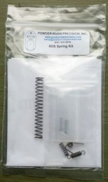

My gun smith, Kapp Ogburn, ordered the Powder River trigger kit for me after I decided I was willing to invest more into my XDS (9mm). At the time he ordered, the only parts available were the springs. They had no sears in stock.
He installed the spring kit back on February 7th. I brought him the gun, watched the entire procedure, then took the gun over to PDHSC later in the day just to verify everything was working. It shot fine. We watched the “how to” video and referred to photos he had taken when he’d done this in the past. The video is just over 15 minutes. It took my gunsmith longer to swap out all the springs because he was patient enough to let me ask questions throughout the process. There is no way I’d have done this. I did remember to ask that he test the trigger pull both before and after.
- Trigger weight before the spring kit: 8 lbs
- Trigger weight after the spring kit: 6.5 lbs
- Trigger weigh of my S&W 1911: 3.25 lbs
They now have the sear available, although oddly, they only sell it with the spring kit. I wrote Powder River and mentioned I’d already bought the spring kit. I asked if it was possible to just buy the sear. The response: “We do not offer the sear as a stand-alone product at this time, but the price you pay is the cost of the sear, and our cost for the springs.”
My gunsmith thinks replacing the sear will take off another pound, possibly getting it down to 5 lbs. I asked him to order the sear, so as soon as I get that and get it installed, I’ll post another update (part 2).
 I did shoot the XDS in the Wake County Action Pistol Match on February 25th. I bought a red holster and mag pouches for matches and this was the first time I used them.
I did shoot the XDS in the Wake County Action Pistol Match on February 25th. I bought a red holster and mag pouches for matches and this was the first time I used them.
Snow was predicted and it started as we finished up the match. Attendance was low due to the weather but I was glad I went. It was warmer than the January match. I had no malfunctions with the XDS and I never got cold. It was a good night. A few lessons learned:
- Grip the gun very high up on the grip to avoid a NASTY pinch (and bruise) on my palm when I reload. The bottom of the magazine seems to hit just about the bottom of my palm and it seriously hurts if I slam in the magazine and pinch flesh.
- If you have to turn before you shoot., turn in the direction of the gun
- Don’t walk into a doorway to shoot – because it’s going to take time to back out and move to the next target.
- I was overdressed. I didn’t need a down vest. We started off at 40 degrees and were still slightly above freezing when the match ended – even though we had snow dusting the cars when we headed home.
Pingback: XDS trigger job – Part2 | Girl Goes Bang
Here’s the link to Part 2: http://girlgoesbang.com/xds-trigger-job-part2/
I have 2 XDs both .45s,mine has about 7 lbs trigger,but the wife’s feels like 14 lbs,it is way too heavy,I am going to do the upgrade on both.
I bought the larger capacity mags for them, we both have 2 mags each.
I bought these guns bc of their light weight,but they can t hold a candle next to my Kimber ultra carry,or my Colt government model. These will be the only plastic guns I ever buy.
Thanks for stopping by! I couldn’t effectively shoot the 45 ACP. I had problems with limp wristing at that time. I doubt it would be an issue now, but it was. I picked the 9mm due to cost of ammo and the extra rounds. I understand that many gun owners love their 1911s but I’ve found plastic guns to be more reliable for me. Hope the trigger jobs get you to an acceptable trigger pull!